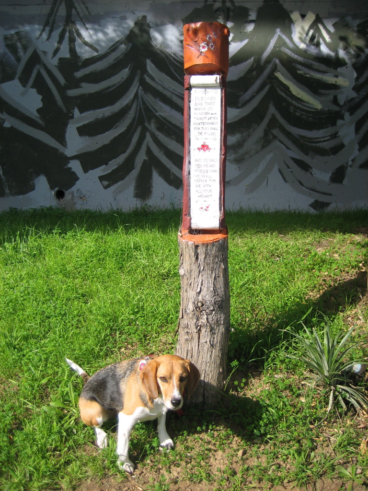

<--Previous
Up
Next-->

... search for me with all your heart.
One of the hundreds of remarkable works by city gardner Demetrio Braceros in Cayuga Playground. Taken while visiting with my parents and Grandma.